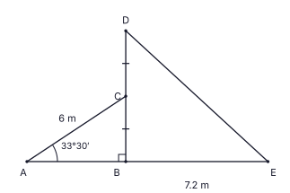
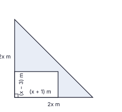
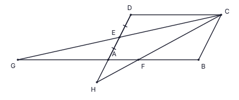
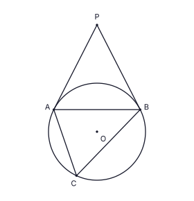
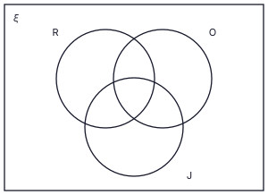

ප්රශ්න පහකට පමණක් පිළිතුරු සපයන්න.
නිමේෂා සහ රුවන් යන දෙදෙනාම තම උයන් සඳහා මුදල් මිල රු. 78 000 වන එකම ජල පොම්පය මිලදී ගනී. නිමේෂා පොම්පය සඳහා රු. 78 000 ක බැංකු ණයක් ලබාගෙන, වසරක් අවසානයේ එක් වරක් ගෙවා එය පියවයි; ඒ සඳහා පොලිය ලෙස රු. 10 140 ක් ගෙවයි. රුවන් පොම්පය වාරික ක්රමයට මිලදී ගනී; ඔහු සෑම මාසයක් අවසානයේම රු. 7 345 බැගින් සමාන මාසික වාරික 12 ක් ගෙවයි. සෑම වාරිකයකම පොම්පයේ මිලෙන් රු. 6 500 ක කොටසක් ඇතුළත් වන අතර, මුළු පොලිය වන රු. 10 140 ගණනය කෙරෙන්නේ මිලෙන් තවමත් ගෙවීමට ඉතිරිව ඇති ශේෂය (අඩුවන ශේෂය) මත ය. පහත ප්රශ්නවලට පිළිතුරු සපයමින්, රුවන්ගේ ක්රමයේ වාර්ෂික පොලී අනුපාතය නිමේෂාගේ ක්රමයේ අනුපාතයට වඩා වැඩි බව පෙන්වන්න.
−6 ≤ x ≤ 2 පරාසයේ y = f(x) ශ්රිතය සඳහා අසම්පූර්ණ අගය වගුවක් පහත දී ඇත.
| x | −6 | −5 | −4 | −3 | −2 | −1 | 0 | 1 | 2 |
|---|---|---|---|---|---|---|---|---|---|
| y | −7 | 0 | 5 | 8 | 9 | 8 | 0 | −7 |
කවින්දුගේ ක්රිකට් සමාජයේ ක්රීඩා පිටියේ තිරස් බිමක සිරස් ආලෝක කණුවක් වන BD පිහිටා ඇත. A, B සහ E යනු බිම සරල රේඛාවක පිහිටි ලක්ෂ්ය වන අතර C යනු BD හි මධ්ය ලක්ෂ්යයයි. A සිට C දක්වා දිග 6 m වන කේබලයක් ද D සිට E දක්වා තවත් කේබලයක් ද ඇදී ඇත. BE = 7.2 m වේ; ∠CAB = 33°30′ වේ. රූපය ඔබේ පිළිතුරු පත්රයට පිටපත් කරගෙන දී ඇති තොරතුරු ඒ මත සලකුණු කරන්න.

නිමේෂාගේ උයනේ බිම් කොටස සමද්විපාද සෘජුකෝණී ත්රිකෝණාකාර වන අතර සමාන පැති දෙකෙහි දිග 2x මීටර බැගින් වේ. රූපයේ දැක්වෙන පරිදි සෘජුකෝණී කොන අසල පැති (x + 1) m සහ (x − 3) m වන සෘජුකෝණාස්රාකාර එළවළු පාත්තියක් සාදා ඇත. බිම් කොටසේ ඉතිරි කොටස (අඳුරු කර ඇත) වර්ගඵලය 100 m2 වන තණකොළ පිටියකි.

සචිනි තම උයන සඳහා මල් පෝච්චි 36 ක් මිලදී ගනී. කුඩා පෝච්චියක මිල රු. 65 ක් ද විශාල පෝච්චියක මිල රු. 110 ක් ද වේ. ඇය මුළුමනින් රු. 3 060 ක් ගෙවයි.
කවින්දුගේ ක්රිකට් සමාජය තරග 40 ක් එක් එකකදී ලබාගත් ලකුණු (රන්) ගණන වගුවේ දැක්වේ.
| ලබාගත් රන් ගණන | 60 – 69 | 70 – 79 | 80 – 89 | 90 – 99 | 100 – 109 | 110 – 119 |
|---|---|---|---|---|---|---|
| තරග ගණන | 3 | 7 | 9 | 9 | 6 | 6 |
ප්රශ්න පහකට පමණක් පිළිතුරු සපයන්න.
පහත නිර්මාණ සඳහා සෙ.මී./මි.මී. පරිමාණයක් සහිත සරල දාරයක් සහ කවකටුවක් පමණක් භාවිත කරන්න. නිර්මාණ රේඛා පැහැදිලිව දක්වන්න.
ABCD සමාන්තරාස්රයේ E යනු AD හි මධ්ය ලක්ෂ්යයයි. CE දික් කළ විට BA දික් කළ රේඛාව G හිදී හමුවේ. AF = 13 AB වන පරිදි F යනු AB මත ලක්ෂ්යයකි. CF දික් කළ විට DA දික් කළ රේඛාව H හිදී හමුවේ. රූපය ඔබේ පිළිතුරු පත්රයට පිටපත් කරගන්න.

ක්රිකට් සමාජය ත්යාග ලෙස ලෝහමය ඝන පිරමීඩ වාත්තු කරයි. සෑම පිරමීඩයකම පාදය පැත්තක දිග a cm වන සමචතුරස්රයක් වන අතර උස 4a cm වේ. එවැනි සර්වසම පිරමීඩ හයක් ලෝහ අපතේ නොයන පරිදි උණු කර පාද අරය r cm ද උස 5r cm ද වන එක් ඝන ඍජු වෘත්ත සිලින්ඩරයක් ලෙස නැවත වාත්තු කරනු ලැබේ.
ක්රිකට් පුහුණුවේදී කවින්දු පළමු දින පන්දු 20 ක් දමන අතර, ඉන්පසු සෑම දිනකම පෙර දිනට වඩා පන්දු 5 ක් බැගින් වැඩියෙන් දමමින්, 14 වන දින තම පුහුණු සැලැස්ම අවසන් කරයි.
රූපයේ O යනු වෘත්තයේ කේන්ද්රයයි. PA සහ PB යනු බාහිර ලක්ෂ්යයක් වන P සිට වෘත්තයට අඳින ලද ස්පර්ශක වන අතර ඒවා වෘත්තය A සහ B හිදී ස්පර්ශ කරයි. C යනු AB ට P ට ප්රතිවිරුද්ධ පැත්තේ වෘත්තය මත ලක්ෂ්යයකි. රූපය ඔබේ පිළිතුරු පත්රයට පිටපත් කරගෙන OA සහ OB යා කරන්න.

සචිනිගේ පැළ නිෂ්පාදන මධ්යස්ථානයට එක් දිනක පාරිභෝගිකයන් 88 දෙනෙක් පැමිණියහ. සර්වත්ර කුලකය ξ යනු මෙම පාරිභෝගිකයන්ගේ කුලකයයි; R, O සහ J යනු පිළිවෙළින් රෝස, ඕකිඩ් සහ සමන්පිච්ච මිලදී ගත් පාරිභෝගිකයන්ගේ කුලක වේ. පාරිභෝගිකයන් 7 දෙනෙක් මෙම වර්ග තුනෙන් කිසිවක් මිලදී නොගත් අතර 57 දෙනෙක් හරියටම එක් වර්ගයක් පමණක් මිලදී ගත්හ. වෙන් රූප සටහන ඔබේ පිළිතුරු පත්රයට පිටපත් කරගෙන තොරතුරු එහි ඇතුළත් කරන්න.
